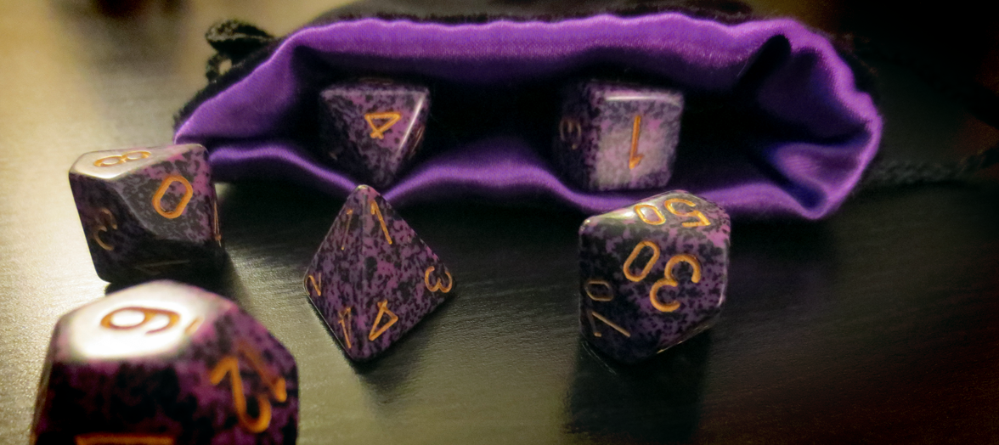

Not much really. All you need are dice, character sheets and other people.
Ah, be careful here. D&D does need special types of dice, with various numbers of sides. The d20 is the most commonly used one, it had 20 sides. You've also got a d4, d6 (that's the normal looking one), d8, d10 and d12. You can buy them online or in gaming shops. A couple of pounds can get you a cheap but entierly functional set or a handmade artisan set can set you back hundreds of pounds. There are a lot of options.
Well, there are always online dice rollers. Have a look at this one from Wizards of the Coast, the people behind D&D.
Your character sheet contains all your information and stats about your character. It tells you how strong they are, how smart they are, how much gold they have and how much health they have left. Your charater sheet will be with you in thick and thin, take good care of it.

That's the fun bit! You get to create them yourself, with dice rolls and imagination! More information can be found on the caracters page here. Essentially, you'll need to roll dice to determine your stats, like wisdom, charisma, and strength, and use your imagination to create a story for your charcter. You can design their background, their motives, they hopes and dreams!
It can take some time to make a charcter, but remember, your charater will stay with you all through the game, so it's worth doing properly. If you really don't have time, you could use an character generator or premade charatcer sheets.
D&D is a social game, so you're going to need some other people. Ask around, you're bound to find some other people that are keen to play. Try asking at local board games shops, many have their own groups you can join. Alternatively, there are lots of online groups you can play with, although you'll also seen a microphone and access to the internet to be able to play.